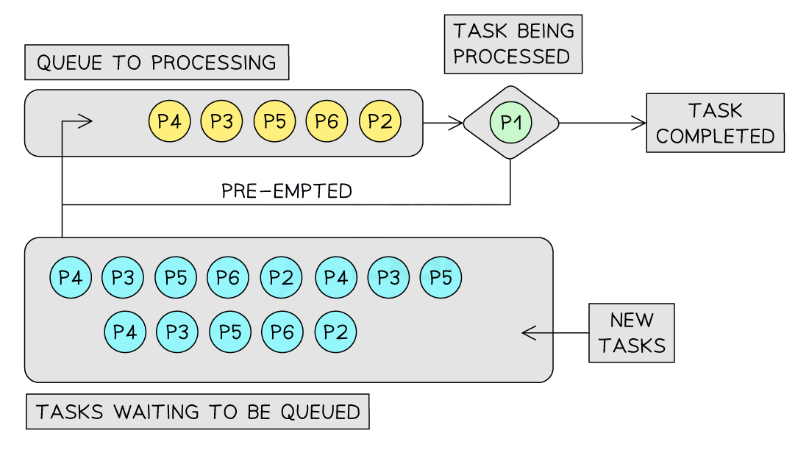
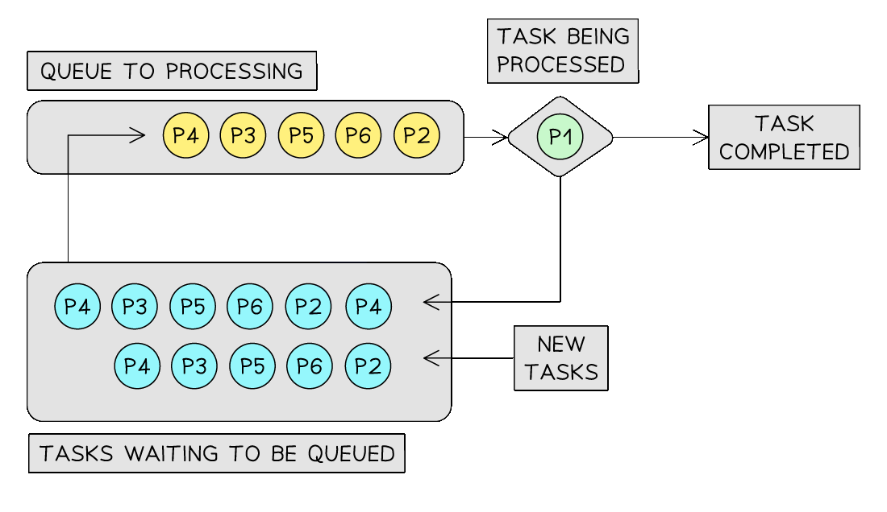
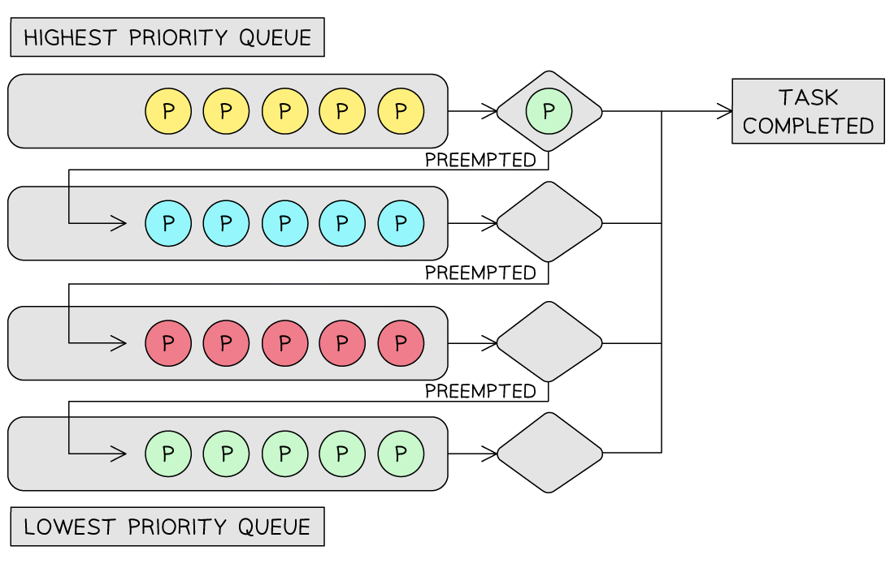
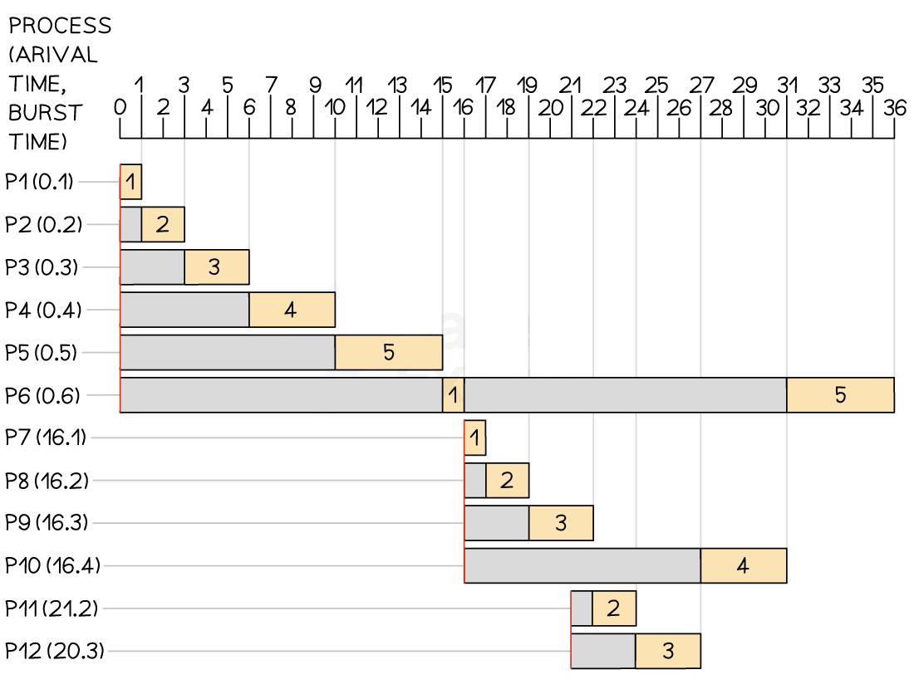
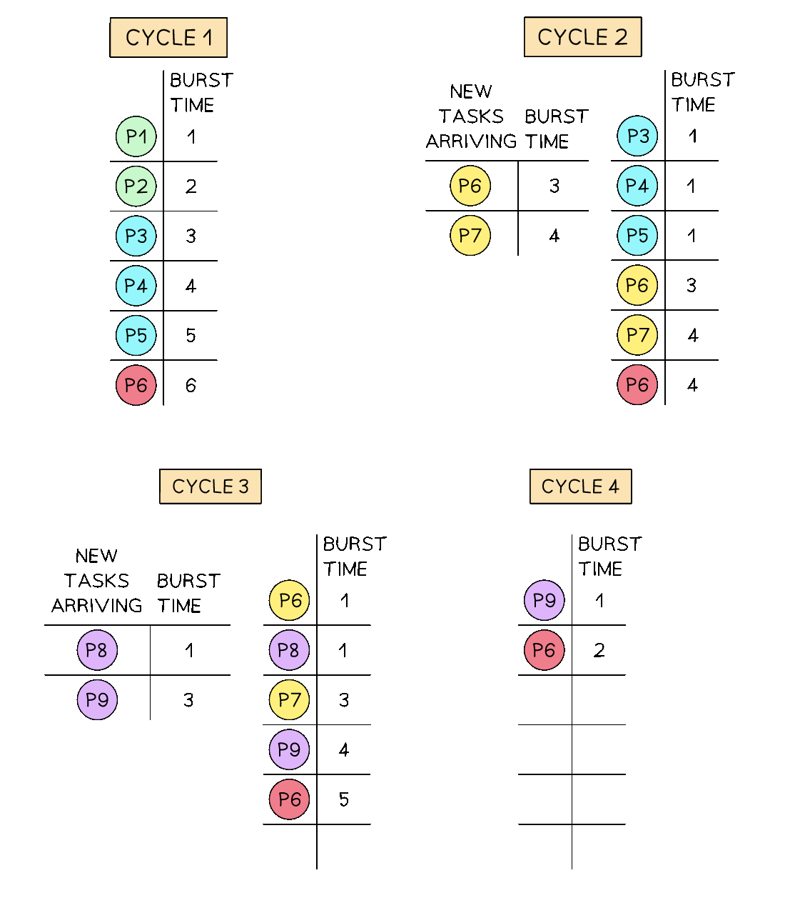
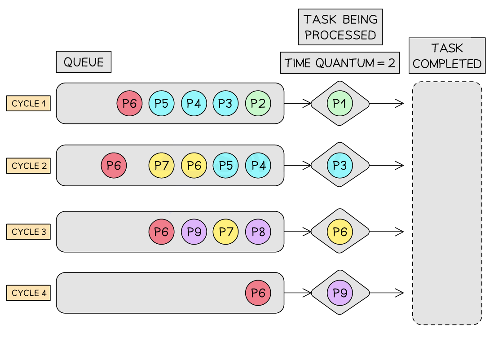
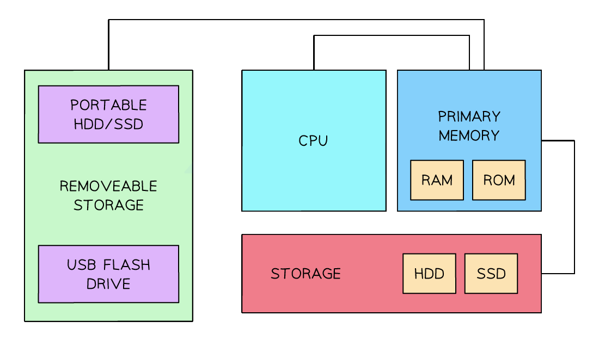
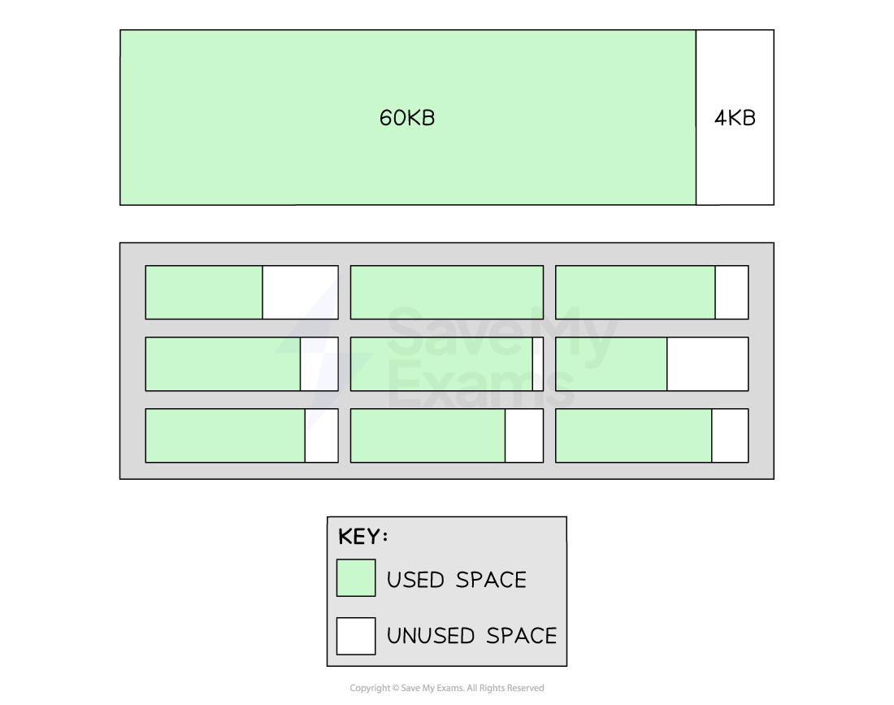
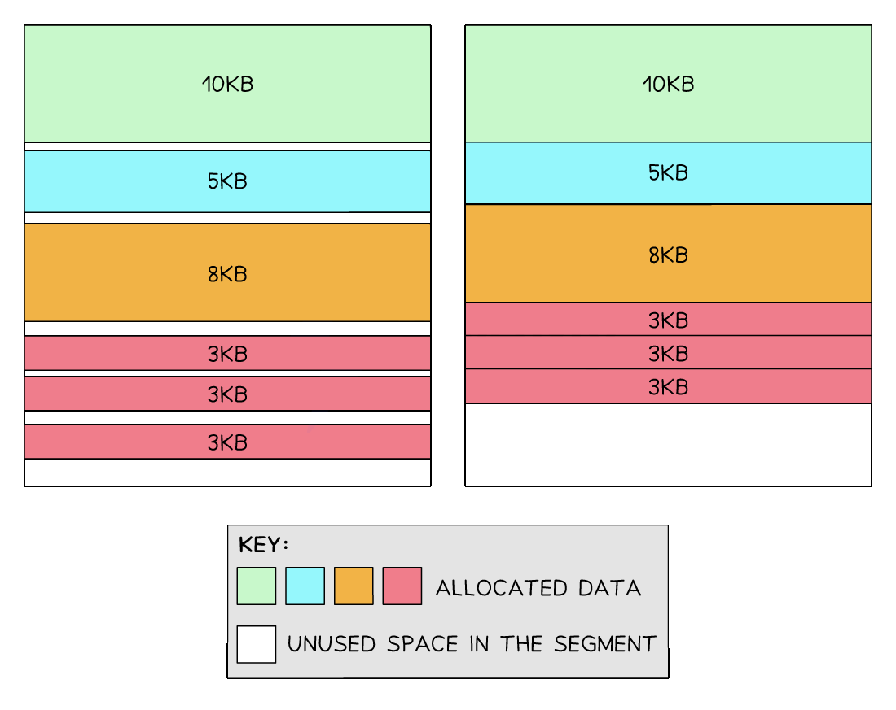

Resource Management
Resource management
How does an operating system maximise the use of resources?
- The Operating System (OS) is responsible for managing the computer’s hardware efficiently to ensure the system runs smoothly
- This is known as resource management and is vital for:
- Maximising performance
- Reducing bottlenecks
- Ensuring multitasking works correctly
- When a computer is switched on, the BIOS (stored in ROM) runs a bootstrap program
- This loads the kernel and essential parts of the OS from the hard disk or flash storage into main memory (RAM)
- On tablets and smartphones, flash memory contains a read-only section for the OS and a second section for apps and user data
- RAM is then used to execute apps and store active data
Kernel
- The kernel is the core of the OS responsible for managing:
| Area | Responsibility |
|---|---|
| Process management | Schedules processes, allocates CPU time, handles multitasking |
| Memory management | Allocates RAM to processes, handles virtual memory, prevents clashes |
| Device management | Controls input/output devices using device drivers |
| Interrupt handling | Deals with interrupts from hardware (e.g. DMA controller or I/O devices) |
| File management | Handles reading/writing from files and file systems |
CPU resource management – scheduling
- The OS maximises CPU usage through scheduling, which allows multiple processes to be managed efficiently
- Multitasking ensures that the CPU switches rapidly between processes
- Different scheduling algorithms (e.g. round-robin, priority-based) are used to share CPU time fairly
Memory resource management
- RAM is allocated dynamically to active programs and system processes
- If RAM is full, the OS may use virtual memory on disk to simulate extra memory
- This allows more programs to run than would otherwise fit in RAM
Input/output management and DMA
- I/O devices are much slower than the CPU, so the OS optimises their use:
- I/O operations are managed through device drivers and interrupts
- The Direct Memory Access (DMA) controller allows data transfer between memory and devices without CPU involvement
- This frees up the CPU to perform other tasks while data is being moved
- When the transfer is complete, the DMA sends an interrupt to the CPU
| Device | Typical data rate |
|---|---|
| Keyboard | ~50 bps |
| Mouse | ~120 bps |
| Laser printer | ~1 Mbps |
| Hard disk | ~100 Mbps |
Hiding hardware complexity
- The OS provides a user-friendly interface and handles the complexity of interacting with hardware:
- GUIs make tasks like file transfers easy (e.g. drag-and-drop instead of command-line)
- Device drivers handle communication with specific hardware
- Users don’t need to know technical commands, the OS abstracts this complexity
Summary
| Resource | Technique used |
|---|---|
| CPU | Scheduling, multitasking, process control |
| Memory | Allocation, paging, virtual memory |
| I/O | Interrupts, DMA, buffering, driver management |
| User interface | Abstracts complexity through GUI and system utilities |
| Storage | File system management, read/write optimisation via caching and buffering |
Process Management
Multitasking & process states
What is multitasking?
- Multitasking is the ability of the operating system to manage system resources (such as memory and the CPU) in a way that gives the user the impression that multiple programs are running at the same time
- In reality, the CPU can only execute one instruction at a time
- It can process billions of instructions per second, and can switch between tasks so quickly that it gives the illusion of programs running simultaneously
- The OS splits tasks and allocates system resources based on a priority
What is a process?
- A process is a program in execution
- This includes:
- The program code
- Current data
- Register values
- Memory space
- Each running application is treated as a separate process by the OS
- A process does not always run continuously
- It changes state depending on what it’s doing and whether it has access to the CPU or is waiting for something
Process states
| State | Description |
|---|---|
| Running | The process is actively being executed by the CPU |
| Ready | The process is prepared to run but is waiting for the CPU to be available |
| Blocked | The process is waiting for an event or resource, such as I/O completion |
Scheduling routines
What is scheduling?
- Deciding which tasks to process, for how long, and in what order is achieved through scheduling algorithms
- A CPU is responsible for processing tasks as fast as possible
- Different algorithms are used to prioritise and process tasks that need CPU time
- The algorithms have different uses, benefits and drawbacks
Scheduling categories
- Pre-emptive: allocates the CPU for time-limited slots
- Allocates the CPU for a specific time quantum to a process
- Allows interruption of processes currently being handled
- It can result in low-priority processes being neglected if high-priority processes arrive frequently
- Example algorithms include Round Robin and Shortest Remaining Time First
- Non-pre-emptive: allocates the CPU to tasks for unlimited time slots
- Once the CPU is allocated to a process, the process holds it until it completes its burst time or switches to a ‘waiting’ state
- A process cannot be interrupted unless it completes or its burst time is reached
- If a process with a long burst time is running, shorter processes will be neglected
- Example algorithms include First Come First Serve and Shortest Job First
Scheduling algorithms
Round robin (RR)
- RR is a pre-emptive scheduling algorithm
- Equally distributing processor time amongst all processes
- Each process is given a time quantum to execute
- Processes that are ready to be worked on get queued
- If a process hasn’t been completed by the end of its time quantum, it will be moved to the back of the queue

Round robin scheduling algorithm
First-Come-First-Served (FCFS)
- FCFS is non-pre-emptive, prioritising processes that arrive at the queue first
- The process currently being worked on will block all other processes until it is complete
-
All new tasks join the back of the queue

First-Come-First-Served scheduling algorithm -
MLFQ is a pre-emptive priority algorithm where shorter and more critical tasks are processed first
- Multiple queues are used so that tasks of equal size are grouped together
- All processes will join the highest priority queue but will trickle down to lower priority queues if they exceed the time quantum

Multi-Level Feedback Queue scheduling algorithm
Shortest Job First (SJF)
- SJF is non-pre-emptive, where all processes are continuously sorted by burst time from shortest to longest
- When new processes arrive on the queue, they are prioritised based on their burst time in the next cycle
- Shorter jobs are placed at the front of the priority queue
- Longer jobs have lower priority, so they are placed at the back

Shortest job first scheduling algorithm
Shortest Remaining Time First (SRTF)
- SRTF is a pre-emptive version of SJF, where processes with the shortest remaining time are higher priority
- Time quantum is set, and if a task doesn’t complete in time, it will be re-queued for further processing
- Before the next cycle starts, all processes are inspected and ordered by the shortest remaining time to complete


Shortest remaining time first scheduling algorithm
Summery
| Algorithm | Benefits | Drawbacks |
|---|---|---|
| Round Robin | All processes get a fair share of the CPU Good for time-sharing systems Predictable, as every process gets equal time |
Choosing the right time quantum can be difficult This can lead to a high turnaround time and waiting time for long processes |
| First Come, First Served | Simple and easy to understand Fair in the sense that processes are served in the order they arrive |
This can lead to poor performance if a long process arrives before shorter processes High-priority tasks wait for their turn in the queue |
| Multi-Level Feedback Queues | Smaller tasks are prioritised Creates a prioritisation system where similar-sized tasks are queued together |
More complex than other algorithms Setting the correct parameters (e.g., number of queues, ageing rules) can be complex |
| Shortest Job First | Minimises waiting time Efficient and fast for short processes |
Requires knowing the burst time of processes in advance Long processes can starve if short processes keep arriving |
| Shortest Time Remaining | Ideal for jobs that have shorter burst times It is pre-emptive, so it can be aligned with CPU for best performance (time quantum) |
Like SJF, it requires knowing the burst time of processes in advance High context switching overhead due to pre-emption |
- The suitability of a scheduling algorithm largely depends on the specific scenario and the system requirements
- A drawback in one scenario may not be a drawback in another
Interrupt handling & kernel
What is the interrupt handling process?
- Interrupt signal occurs (e.g. input from keyboard, DMA completion, timer)
- Current process is paused and its state is saved (registers, PC, etc.)
- The kernel identifies the source and priority of the interrupt
- The appropriate Interrupt Service Routine (ISR) is called
- Once complete, the original process is restored and resumed
Low-level scheduling via interrupts
- Interrupts are essential for the OS to perform low-level scheduling, which involves:
| Interrupt Type | Scheduling Role |
|---|---|
| Timer Interrupts | Used to trigger a context switch between processes, supporting pre-emptive multitasking |
| I/O Interrupts | Signals that an I/O task (e.g. file write, printer job) has finished — unblocks waiting processes |
| Hardware Interrupts | Responds to urgent external events (e.g. power failure, mouse input) |
| Software Interrupts | Generated by programs to request system-level services (e.g. memory allocation) |
- The scheduler, which is part of the kernel, uses these interrupts to decide which process should run next, often based on a priority or time slice system
Memory Management
Memory management
What is memory management?
- Memory management is a fundamental role of the operating system, dealing with the allocation and deallocation of the computer’s primary memory
- When a user opens an application, its data is loaded from storage into active memory so that it can run smoothly
- When a user opens a file from the file system, e.g. word document, the CPU loads this file data, as well as application data, into the primary memory
- Primary memory is a limited resource in the system, so it needs careful management
- Benefits of memory management are:
- Efficient allocation of memory enables multitasking, allowing multiple programs to run at once
- Memory management maintains security, it does not let programs access memory reserved for other programs
-
Memory management is made more efficient through 3 techniques:
- Paging
- Segmentation
- Virtual memory

Links between different types of memory
-
The main benefit of memory management is to make computer systems run smoothly. Most users don’t realise that as they effortlessly move between applications, it’s made possible because the OS is rapidly reallocating memory depending on the task that the user is completing.
- Make sure you can name one benefit and one drawback for each memory management method in this revision note.
Paging
What is paging?
- In A Level Computer Science, paging is a method of chunking the primary memory into equal-sized blocks
- Data stored in memory will lead to the smooth running of applications
- When an application is launched, data will be moved from the hard disk into Pages for faster access
- As users move between applications, memory is dynamically allocated
- Pages will be taken away from applications not in active use and granted to applications that are in active use
- Paging can lead to internal fragmentation
- If a 200KB file is divided into four 64KB Pages, the last Page would have 56KB of unused space
- First 64KB → Full page (64KB used, 0KB unused)
- Second 64KB → Full page (64KB used, 0KB unused)
- Third 64KB → Full page (64KB used, 0KB unused)
- Fourth 64KB → Partial page (8KB used, 56KB unused)
- Unused space in a Page is wasteful because other unrelated data cannot be stored in this Page
- Over time, more pockets of wasted space will exist across the memory; this process is called internal fragmentation
- The image below shows a single 64KB Page with 4KB of unoccupied space
- The box below this shows many Pages, each with varying sizes of internal fragments

Internal fragmentation
Segmentation
What is segmentation?
- Segmentation is a method of chunking memory into blocks that correspond to different types of data needed by an application
- A video editing application may have a Segment for video data, audio data and special effects
- Segments are not all the same size; they are sized depending on their allocated data
- Segmentation is space-efficient due to only allocating space depending on the amount an application needs
- Segmentation can lead to external fragmentation
- As Segments fill up the memory, physical gaps reduce the maximum size of new Segments that can be allocated
- Below (left) shows different application data assigned to a Segment
- The arrangement of data in the segment becomes more fragmented over time because as blocks are taken away it’s not possible to guarantee a new block will occupy the same amount of space
- Below (right) shows a defragmented version of the Segment to highlight the total unused space

External fragmentation
Virtual memory
What is virtual memory?
- If a computer is running low on primary memory, it can make secondary storage act as an ‘extension’ of the main memory
- The operating system can offload data from the primary memory into virtual memory
- Virtual memory creates an illusion of a larger memory and enables applications to continue to multitask
- However, accessing data in virtual memory is considerably slower compared to RAM
- Solid-state drives are faster than traditional hard-disk drives, but neither are as fast as RAM
- Over-reliance on virtual memory can lead to performance issues
| Memory Management Technique | Description | Example | Benefits | Drawbacks |
|---|---|---|---|---|
| Paging | Divides memory into fixed-sized blocks (pages) | A process needing 200KB of memory is divided into four 64KB pages, leaving 8KB unused in the last page | Facilitates efficient memory management and enables the use of virtual memory | This can lead to internal fragmentation |
| Segmentation | Divides memory into variable-sized segments based on logical parts of a process | In a video editing application, different segments may be created for video data, audio data, effects, and UI elements | Allows for intuitive and efficient memory access | This can result in external fragmentation |
| Virtual Memory | Uses hard drive space as an ‘extension’ of RAM | When memory-intensive applications exceed the available RAM, the OS moves less frequently accessed pages to the hard disk | Allows more extensive programs to be run and facilitates effective multitasking | Slower to access than physical memory, which degrades performance if overused |
Quiz
Virtual memory, paging and segmentation are used in memory management. (a) Explain what is meant by virtual memory.[3] (b) State one difference between paging and segmentation in the way memory is divided.[1] Answers (a)
- Disk / secondary storage is used to extend the RAM / memory available [1 mark]
- … so the CPU appears to be able to access more memory space than the available RAM [1 mark]
- Only the data in use needs to be in main memory so data can be swapped between RAM and virtual memory as necessary [1 mark]
-
Virtual memory is created temporarily [1 mark] (b)
-
Paging allows the memory to be divided into fixed size blocks and Segmentation divides the memory into variable sized blocks [1 mark]
- The operating system divides the memory into pages, the compiler is responsible for calculating the segment size [1 mark]
- Access times for paging is faster than for segmentation [1 mark]